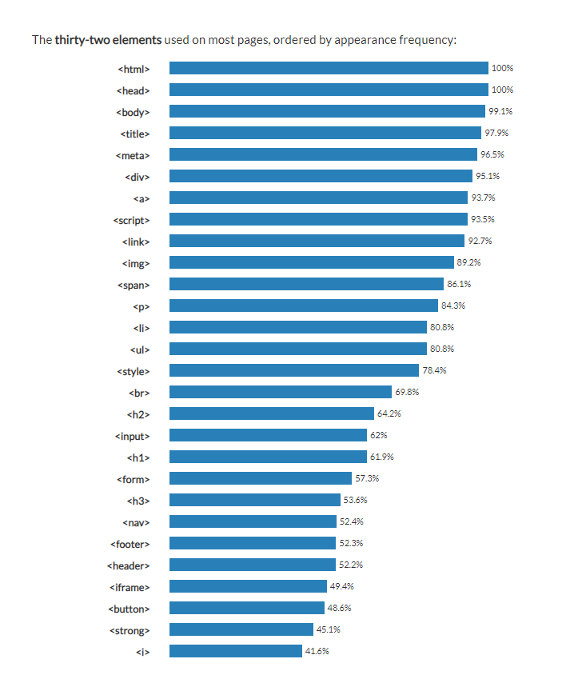

Html은(는) 웹페이지의 가장 기본적인 부분을 담당한다.
웹페이지를 만들기위한 에디터에 들어가서 글자를 입력하게되면 아래와같은 모습이 나온다.
이러한 글자들을 우리가 아는 웹페이지의 형태로 만들기 위해서는 태그(tag)라는 것을 사용해야한다.
Html의 기본적인 형태는 <태그> 보여질 말 <태그> 가 일반적이다.
태그의 종류는 굉장히 많지만 통계적으로 가장 많이쓰이는 태그들에 대해 알아보겠다.
: 웹페이지의 시작과 끝
웹페이지는 <html>로 시작해서 <html>로 끝난다.
2. <head>
: 웹페이지의 정보, 문서에서 사용 외부 파일들을 링크할 때 사용
<title>, <meta>, <link>등이 들어간다.
3. <body>
: 브라우저에 실제로 표시되는 내용
4. <title>
: 문서 제목
<title>안의 내용이 웹브라우저 제목 표시줄에 표시된다.
5. <meta>
: 문자 인코딩 및 문서 키워드, 요약 정보
잘 모름.
6. <div>
: 아무런 의미가 없으며, 컨텐츠들을 어떤 목적으로 묶어야 할 때 사용한다.
7. <span>
: 아무런 의미가 없으며, 컨텐츠들을 어떤 목적으로 묶어야 할 때 사용한다.
<div>는 연달아 쓸 시 줄이 바뀜.
<span>는 연달아 쓸 시 줄이 바뀌지않음.
(<div> <span>는 등수 차이가 나지만 쓰임이 비슷해 붙여서 설명)
8. <a>
: anchor, 웹 페이지나 외부 사이트 연결
다른 문서나 사이트를 연결해 주는 것을 하이퍼링(hyperlink), 또는 링크(link)라고 한다.
이 링크를 만들 때 <a>를 사용한다.링크로 사용 텍스트나 이미지를
<a>로 묶고 href(hypertext reference)속성을 이용해서 연결할 웹 페이의 이름이나 웹사이트 주소를 지정하면 된다.
<a href="연결할 링크의 경로">내용<a>
위의 내용을 html만으로 쓰면 이렇게 나온다